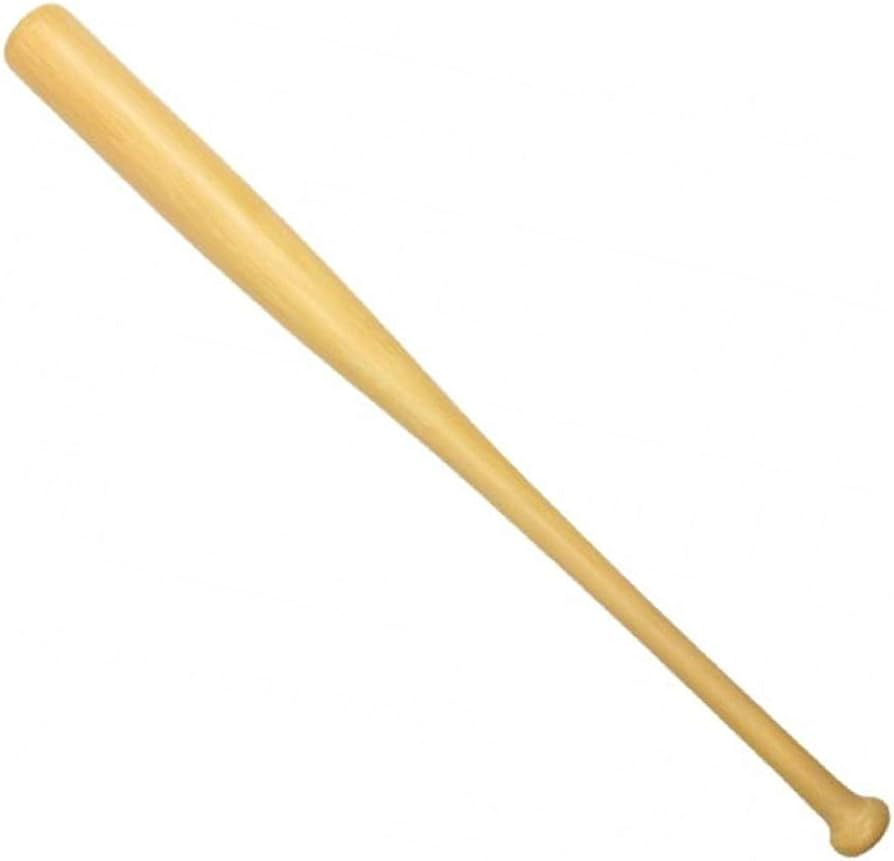
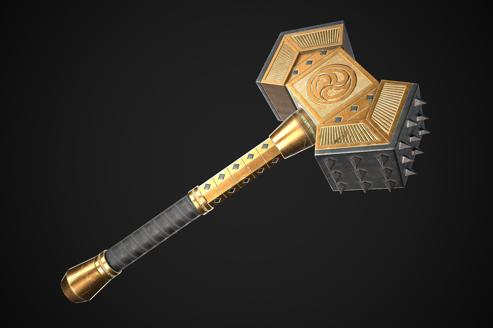
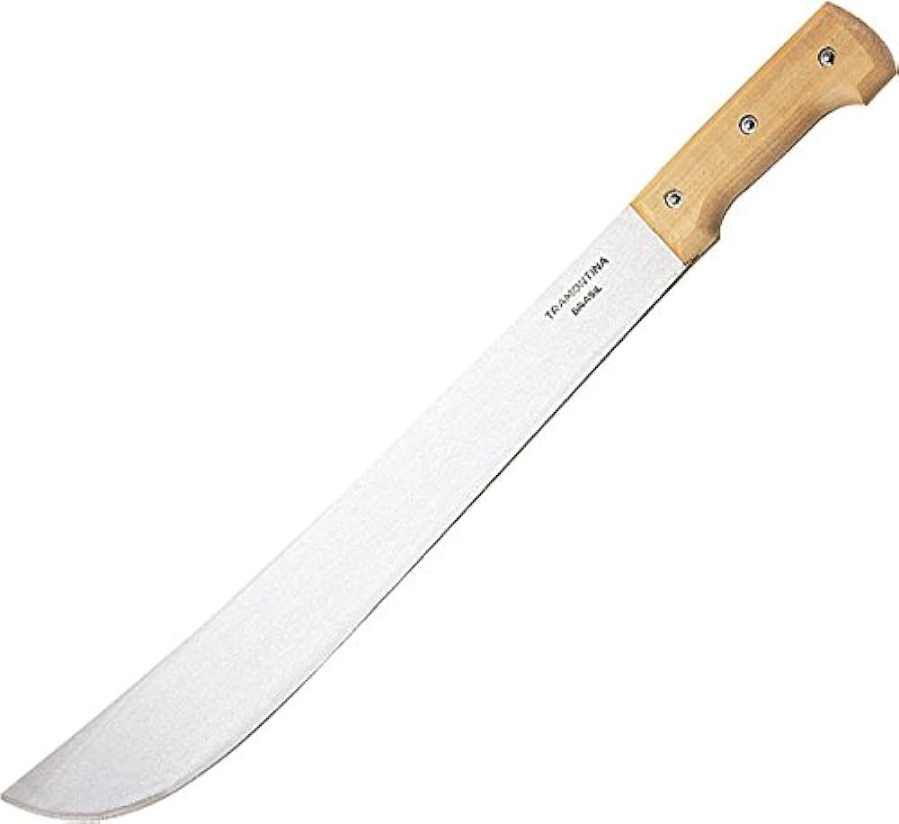
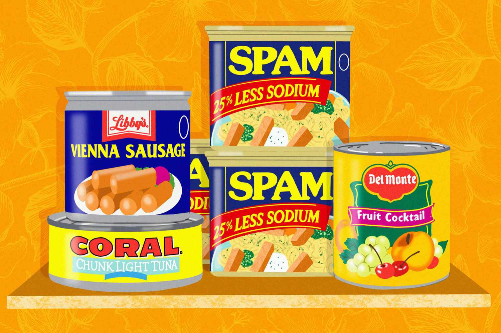
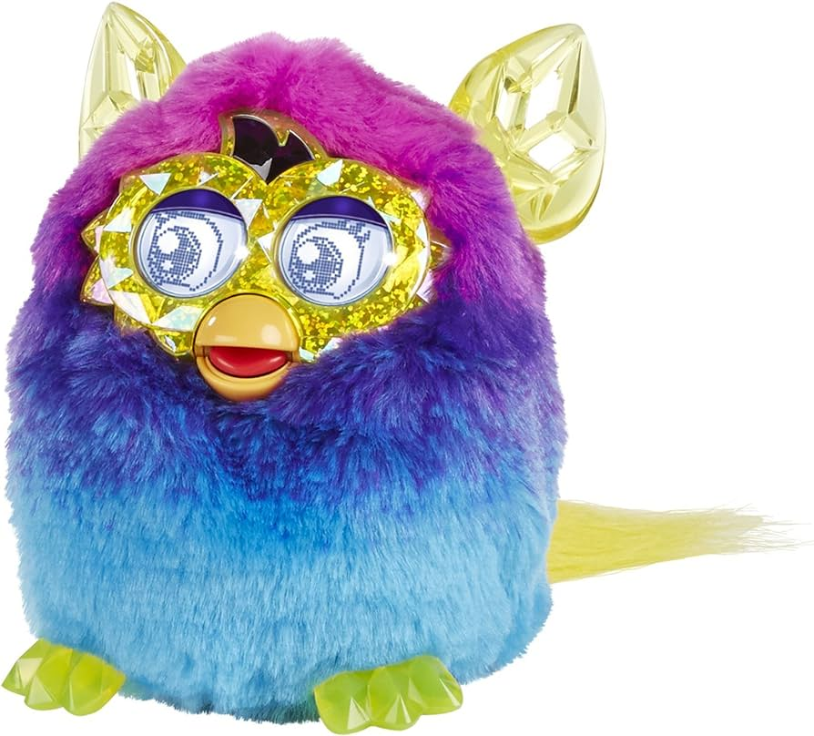
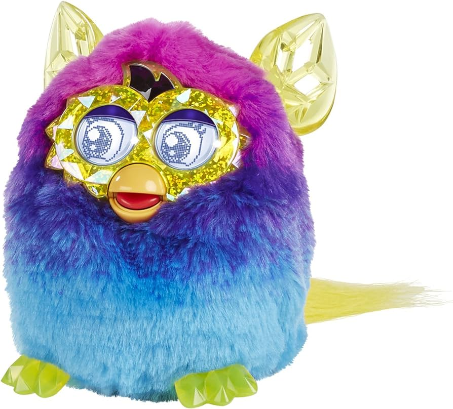
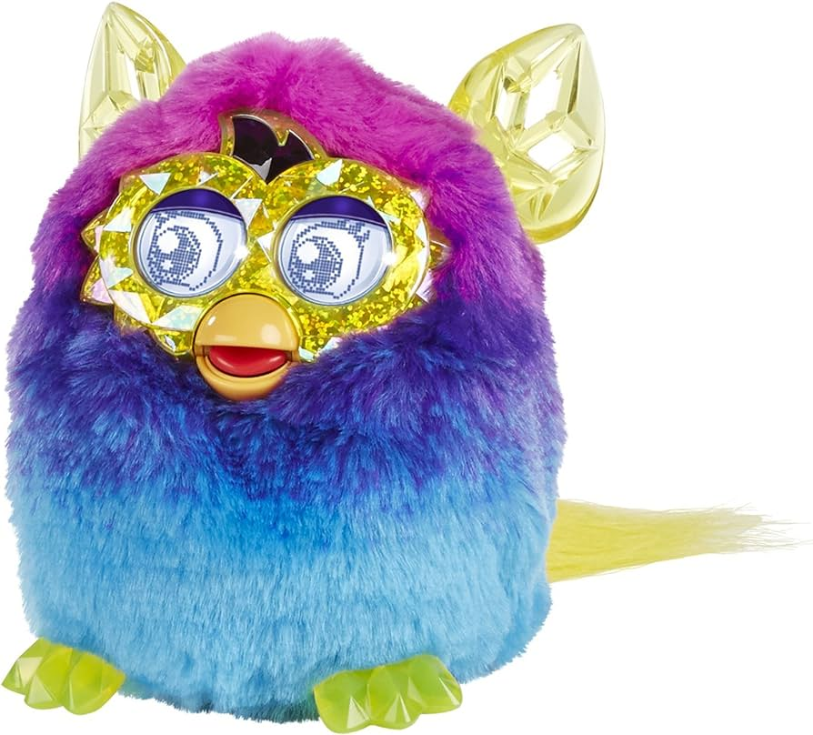
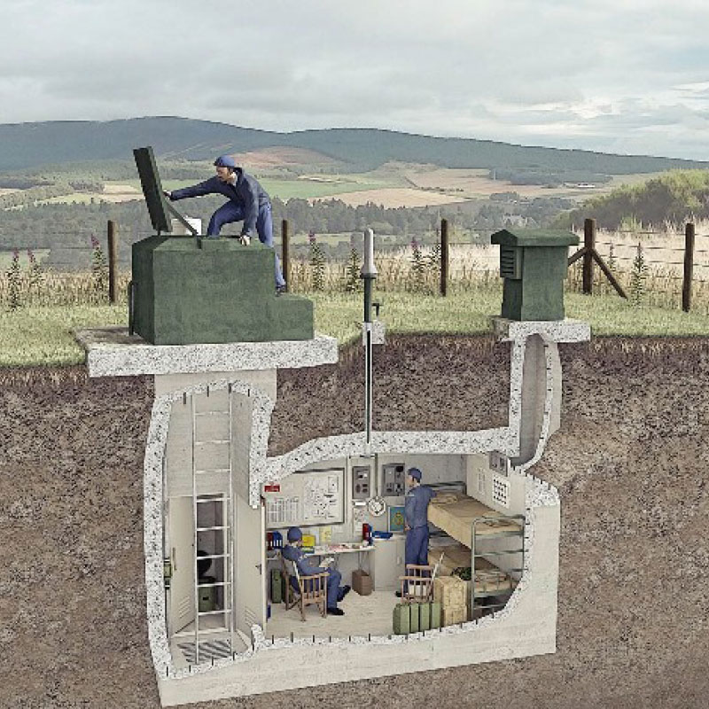

Inventory
Pick your weapon!
Thinking on your feet, you look around your house for a weapon. The following are what you found, but you can only carry one!



Now for Supplies!
Zombies are starting to break in! You decide it would be best to find a safe haven for yourself. Before you leave, you find that you have enough space for supplies, but only one set. Choose wisely!

 


Where to go?
Acquiring a map, you find three places within a reasonable distance to seek shelter. Where do you go?
